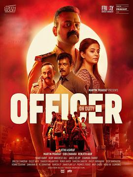

7.0
值班警官
Officer on Duty
2025
印度
评分 7.0
导演:
Jithu Ashraf
演员:
昆查科·博班 / 普丽亚玛尼 / 维沙克·奈尔 / 贾格迪什·卡比尔
类型:
动作,惊悚,犯罪
剧情简介
哈尔尚卡尔（昆查科·博班 饰）曾为柯基拉警方中才气横溢的探员，却因一次失控出手被降职。他被安排担任阿卢瓦警察局的分局督察，任务看似简单：调查一个仿制黄金链的假珠宝案。这条线索起初似乎无关紧要，但当他深入了解后，发现这条假链背后牵出一个纵横跨两州、涉及人口拐卖与网络欺诈的庞大犯罪网。在调查过程中，哈尔尚卡尔不断被自己的过去拉扯：年幼女儿的伤痛、妻子的失望、自己的职业混乱——而这些都在这条案件线上被冷酷地撬动。当他在深夜走访失落小巷、录音室钩沉证人、在监控中追踪嫌疑人，镜头捕捉到他脸上的疲惫、手臂上的淤青、抽屉里女儿小手工的照片。他意识到，这不仅仅是破解一个假珠宝案，而是面对一个将家庭、正义与绝望纠缠在一起的腐败体系。影片在夜色和阴影中娓娓展开：哈尔尚卡尔在仓库灯泡闪烁下突然遭遇伏击，被迫用仅剩武器抗敌；普丽亚玛尼饰演的资深警官敏锐察觉案件背后的交易人与受害人的关联，她与哈尔尚卡尔默契配合，拼凑线索；维沙克·奈尔饰演的反派冷静而无情，他的行为把“黑暗专业组织化”的概念带上屏幕。每一次转角、每一道敲门、每一次镜头推近，似乎都在提醒观众：在这座城市，警察与罪犯可能只是一线之隔。《值班警官》最令人印象深刻的是它在动作与情感之间的平衡：打斗场景激烈，却从未遮蔽主角的情感裂缝；亲情线索虽轻却根植深处，提醒我们那位警官不仅在“执法”，也是一个父亲、一个受伤的人。影片最终让观众问自己：当法律无法保护你时，你会如何反击？如果你喜欢那种内心与外界同时受压、警察身份复杂、犯罪网络错综的惊悚动作片，《值班警官》无疑是一部值得一看的作品。